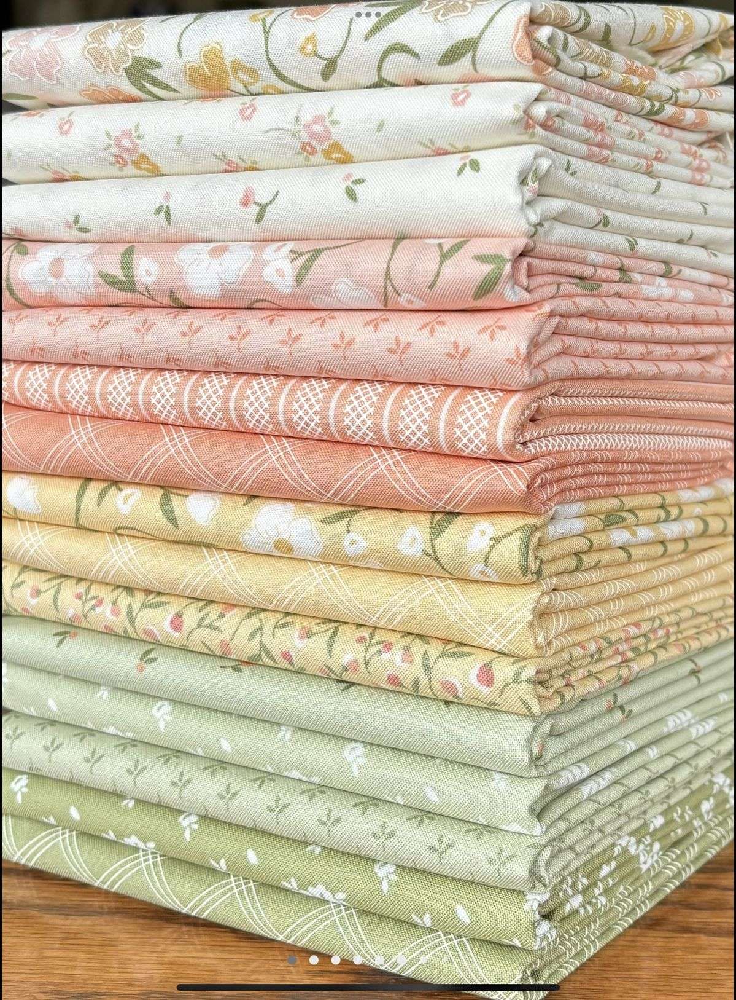
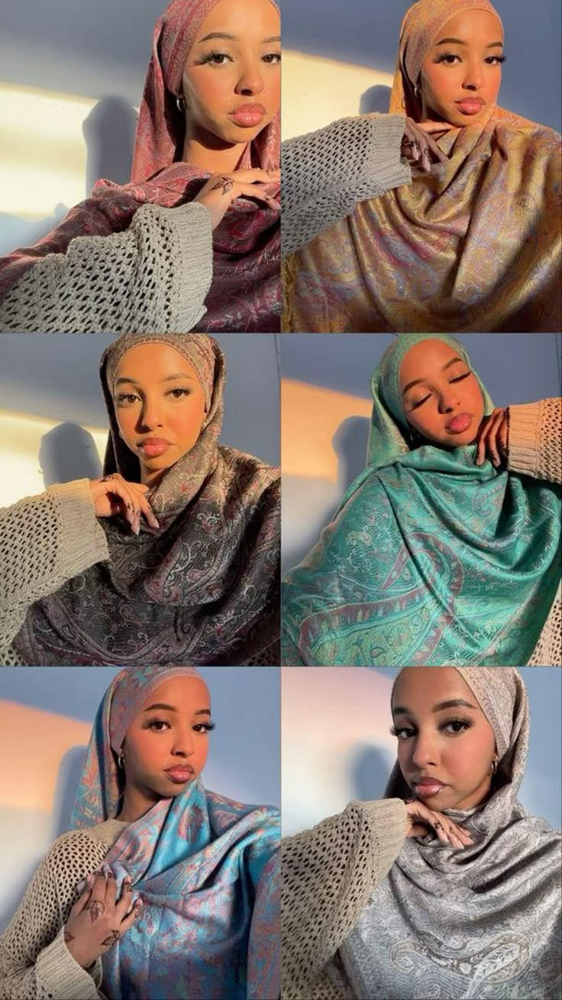
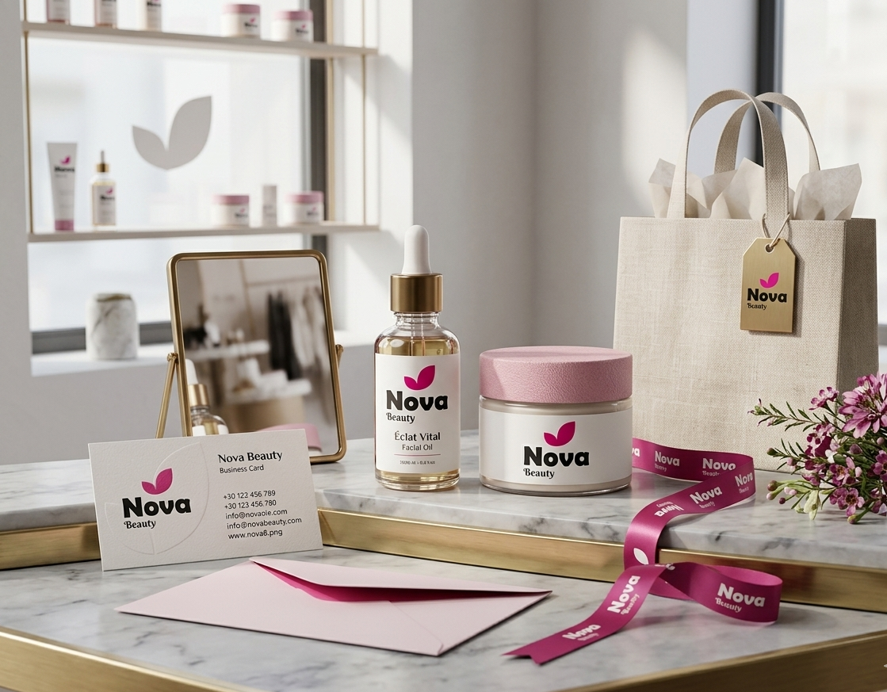
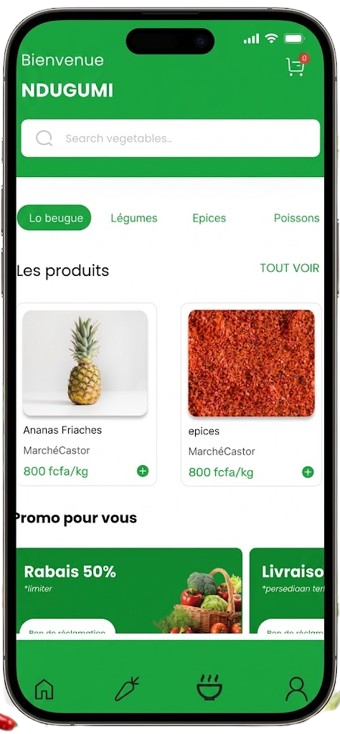
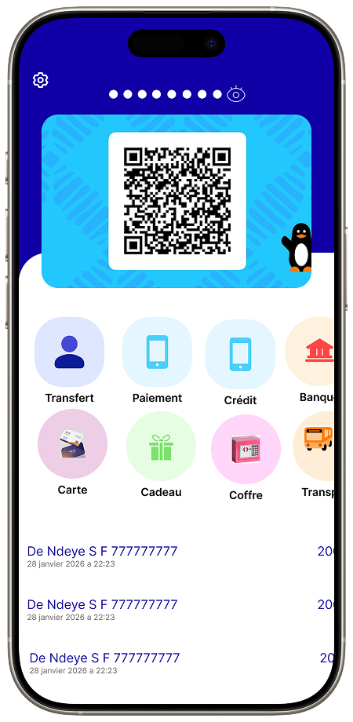

Projects
Bousso Tissu
Création d'une identité visuelle pour une marque spécialisée dans la vente de tissus. Le projet comprend la conception du logo, la définition de l'univers graphique, la création de supports visuels et une réflexion autour de la présence digitale de la marque.

Ballyhidjab
Développement de l'identité visuelle d'une marque spécialisée dans les produits de mode. Le projet porte sur la création graphique, la cohérence de l'identité de marque et sa valorisation à travers des supports numériques.

Sunu Transit
Conception de l'identité visuelle et réflexion autour d'une application mobile dédiée au transport. Ce projet m'a permis de travailler sur l'expérience utilisateur, l'interface et la communication visuelle d'un service numérique.
Ndar Digital Skill
Reproduction et intégration d'un site web avec WordPress dans le cadre de ma formation. Ce projet m'a permis de renforcer mes compétences en intégration web, mise en page responsive et personnalisation d'interfaces.
Helb Digital
Création de l'identité visuelle et développement de supports de communication pour une entreprise spécialisée dans les services digitaux. Le projet comprend la conception du logo, la réflexion graphique et la réalisation de supports publicitaires.

MOUHIDINE PARFUMERIE
Conception d'une identité visuelle pour une entreprise spécialisée dans la parfumerie. Le travail porte sur la création du logo et la recherche d'une identité graphique élégante et cohérente autour des couleurs vert et blanc.

Nova Beauty
Création de l'identité visuelle d'une marque spécialisée dans l'univers de la beauté. Le projet comprend la conception graphique, la définition de l'univers visuel de la marque ainsi que la création de supports de communication adaptés à sa présence digitale.

Ndugumi
Conception d'un projet digital autour de l'application Ndugumi, avec un travail sur l'expérience utilisateur, l'interface graphique et la présentation du concept. Ce projet m'a permis de mettre en pratique mes compétences en UI/UX Design et en conception digitale.

Wave
Reproduction d'une interface mobile inspirée de Wave, avec la conception de différents composants d'interface. Ce projet m'a permis de mettre en pratique mes compétences en UI/UX Design, en conception d'interfaces et en organisation des éléments graphiques pour une expérience utilisateur claire et intuitive.
